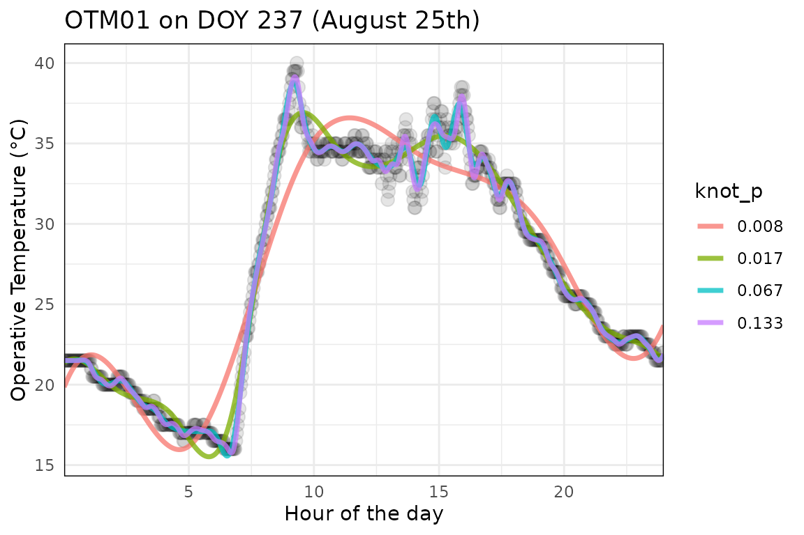

Reading, processing and characterizing OTM data
rnp_otms_data_gen_otm_splines.RmdOverview
The goal of this vignette is to illustrate the process behind the
rnp_otms_data (read and
process OTMs data) and gen_otm_splines
(generate OTM spline
models) function of the throne package.
The first function allows the user to read one or multiple raw
.csv with temperature measurements recorded by an iButton
logger inside (or not) of an operative temperature
model (OTM) to a data structure easily
manageable in R (a tibble). The
second function takes this processed OTM data and generates an OTM &
day of year (doy) specific cubic spline model that
describes the thermal dynamics of each unique OTM each day. These spline
models will later be used to both correct the flight data and to
ultimately predict thermal landscapes. Below, we highlight the section
of the package’s workflow that is covered in this vignette:

Next, we will
How the rnp_otms_data function works
The rnp_otms_data function reads a database of
.csv files, reads them, manipulates them and ultimately
combines them into a large tibble. To do so, the function
takes in the following inputs:
- The
path, or directory to one or multiple.csvfiles are stored. Each of these.csvfiles is assumed to have at least:
A column for operative temperature measurements. Since different iButton processing softwares structure the outputs differently in the resulting
.csvfile, we require the user to specify the column where the OTM measurements can be found in theop_temp_colargument of the function. In our case, we used OneWire Viewer which returns the operative temperature in the3rd column.A column for dates. As with the operative temperature values, we also require the user to specify the
date_colin their .csv files. OneWireViewer returns the date in the first column in MM/DD/YY HH:MM:SS AM/PM format. By default dates and times will be extracted from this column but other software return date and time in separate columns. If that is the case, the user can specify thetime_colas an argument of the function.
## Date.Time Unit Value
## 1 8/24/23 6:04:00 AM C 14
## 2 8/24/23 6:06:00 AM C 14
## 3 8/24/23 6:08:00 AM C 14
## 4 8/24/23 6:10:00 AM C 14
## 5 8/24/23 6:12:00 AM C 14
## 6 8/24/23 6:14:00 AM C 14- An OTM
metadatatibblecontaining information related to each specific OTM (identified by a uniqueotm_id). The user can include any metadata for the OTM but we require that anotm_idcolumn is present and we strongly recommend that the metadatatibblefile also contains columns for thelatitudeandlongitudeat which the OTM was deployed. In the example metadatatibblethat can be found in this package we also incorporate information on themicrohabitat,orientationandelevationat which the OTM was deployed.
otms_metadata## # A tibble: 36 × 6
## otm_id microhabitat orientation latitude longitude elevation
## <chr> <chr> <chr> <dbl> <dbl> <dbl>
## 1 OTM01 outcrop N 39.9 -120. 1312.
## 2 OTM21 outcrop NW 39.9 -120. 1312.
## 3 OTM07 outcrop E 39.9 -120. 1312.
## 4 OTM16 outcrop SE 39.9 -120. 1313.
## 5 OTM17 outcrop Flat 39.9 -120. 1311.
## 6 OTM28 rock Flat 39.9 -120. 1313.
## 7 OTM13 rock S 39.9 -120. 1314.
## 8 OTM37 boulder W 39.9 -120. 1314.
## 9 OTM33 boulder Flat 39.9 -120. 1314.
## 10 OTM24 rock E 39.9 -120. 1314.
## # ℹ 26 more rowsTIP: We recommend that users of the
thronepackage become very familiar with the formatting of the.csvthat contain OTM data. In some software options the resulting.csvfile will contain several rows of metadata that might lead to an incorrect reading of the file (see example below). While thernp_otms_datawill provide warnings we also recommend the users to specify how many rows should be skeeped when reading the.csvfile via therows_skip. Specifying therows_skipargument correctly is crucial for the rest of the package’s functions to work properly down the line.
## X1.Wire.iButton.Part.Number..DS1921G.F5
## 1 1-Wire/iButton Registration Number: 3300000059DFE621
## 2 Is Mission Active? true
## 3 Mission Start: Thu Aug 24 06:04:00 PDT 2023
## 4 Sample Rate: Every 2 minute(s)
## 5 Number of Mission Samples: 18947
## 6 Total Samples: 89897To transform the raw .csv data into an R
tibble, the rnp_otm_data function will go
through the following general steps:
- Read each
.csvfile while skipping as many rows as specified within therows_skipargument. - Select the columns for time and operative temperature as specified
by the
date_col(time_col) andop_temp_colarguments. - Using tools from the
lubridatepackage, extract theyear, day of the year (doy)and minute of the day (doy) at which each oprative temperature measurement (op_temp) was made.
NOTE: We choose working with
doyandmodto simplify the management of the data as much as possible. Date and time data have unique data formats in theRenvironment that are often difficult to handle for users and that might lead to unintended errors. By usingdoyandmod, the user deals with integer columns, much easier to operate with and manipulate. Further, these formats can be easily transformed back into more easily interpretable scales for visualization purposes, by using theas.Datefunction to transformdoy(also known as Julian date) back into a YYYY-MM-DD format and dividing by 60 formodto get hours.
- Merge the processed data for each OTM with its corresponding metadata and, if more than one file is specified, bind the outputs together.
The final output is a tibble object that should look
like this:
## # A tibble: 67,584 × 10
## otm_id year doy mod op_temp microhabitat orientation latitude longitude
## <chr> <dbl> <dbl> <dbl> <dbl> <chr> <chr> <dbl> <dbl>
## 1 OTM01 2023 236 367 13.5 outcrop N 39.9 -120.
## 2 OTM01 2023 236 369 13.5 outcrop N 39.9 -120.
## 3 OTM01 2023 236 371 13.5 outcrop N 39.9 -120.
## 4 OTM01 2023 236 373 13.5 outcrop N 39.9 -120.
## 5 OTM01 2023 236 375 13.5 outcrop N 39.9 -120.
## 6 OTM01 2023 236 377 13.5 outcrop N 39.9 -120.
## 7 OTM01 2023 236 379 13.5 outcrop N 39.9 -120.
## 8 OTM01 2023 236 381 13.5 outcrop N 39.9 -120.
## 9 OTM01 2023 236 383 13.5 outcrop N 39.9 -120.
## 10 OTM01 2023 236 385 13.5 outcrop N 39.9 -120.
## # ℹ 67,574 more rows
## # ℹ 1 more variable: elevation <dbl>Each row on this tibble will correspond to a unique
operative temperature (op_temp) measurement by a given
otm_id in a given year, doy and
mod. Our example data set contains measurements of 33 OTMs
over 4 days recording at a rate of 720 observations / day (30
observations / h, 0.5 observations / min).
Generating OTM spline models
Once the OTM data has been read and processed, the next step is to
fit a cubic smoothing spline model to each individual
OTM for each doy during it’s deployment in the field. This
spline model will capture the thermal dynamics of an OTM throughout a
given doy allowing us to build a predict the operative
temperature experienced by the OTM at any moment of that
doy based on the measurements it recorded.
To fit these models the throne package includes the
gen_otm_splines function which takes as input data
generated via the previously presented rnp_otms_data
function and a The function will return a “complex” tibble
will include the OTM identification (otm_id) and all
associated metadata, together with a nested column
containing the spline model generated via the native R
function smooth.spline. We call this a “complex”
tibble precisely because of the nesting of the
splines column. The resulting splines tibble
will contain as many rows as combinations of unique otm_id
and doy since there will be a spline model for each OTM
every day it was deployed in the field:
## # A tibble: 132 × 9
## otm_id year doy microhabitat orientation latitude longitude elevation
## <chr> <dbl> <dbl> <chr> <chr> <dbl> <dbl> <dbl>
## 1 OTM01 2023 236 outcrop N 39.9 -120. 1312.
## 2 OTM01 2023 237 outcrop N 39.9 -120. 1312.
## 3 OTM01 2023 238 outcrop N 39.9 -120. 1312.
## 4 OTM01 2023 239 outcrop N 39.9 -120. 1312.
## 5 OTM02 2023 236 outcrop W 39.9 -120. 1313.
## 6 OTM02 2023 237 outcrop W 39.9 -120. 1313.
## 7 OTM02 2023 238 outcrop W 39.9 -120. 1313.
## 8 OTM02 2023 239 outcrop W 39.9 -120. 1313.
## 9 OTM03 2023 236 rock W 39.9 -120. 1317.
## 10 OTM03 2023 237 rock W 39.9 -120. 1317.
## # ℹ 122 more rows
## # ℹ 1 more variable: spline <list>Choosing the appropriate knot_p value.
A critical point for the gen_otm_splines function to
work correctly is determining the appropriate value for the
knot_p argument. This argument determines the percentage of
observations recorded by an OTM in a given day that are used to
determine the number of knots of the smoothing spline model. To put it
simply, the number of knots will ultimately determine the degrees of
freedom of the model as \(df = degree +
k\) and \(degree = 3\) for cubic
splines. (see here
for further details). The number of degrees of freedom will then
determine the “wiggliness” of the resulting model, in other words, the
number of times the resulting curve will change direction. As an
example, below we plot different spline models for the same data using
different knot_p parameter specifications.

The decision on which knot_p value to use is dependent
on two things. First is the frequency at which the OTM itself is
recording. We can extrapolate how many knots/day (or knots/h)
we would get based on the frequency of recordings and the
knot_p value according to the formula:
\[ Knot/h = Recordings/h \cdot knot_p\]
For instance, the OTMs we used here were programmed to record a
temperature measurement every 2 minutes, leading to a total of 30
observations / hour. Assuming a knot_p = 0.1 that would
indicate that our model has 3 knots / h.
The second issue that determines the value of knot_p is
the study organism of the user of this R package. Generally
OTMs will equilibrate to the environmental temperature much faster than
the organism they represent with this difference in equilibration time
being positively correlated to the mass of the organism due to thermal
inertia. In other words, the body temperature of an organism that has a
lot of thermal inertia will not be exactly that of the OTM.
(Need some more work on this)